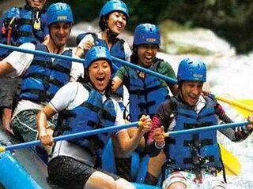
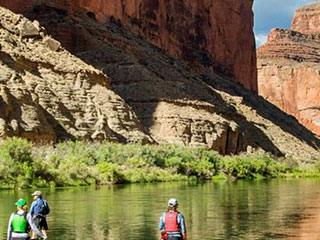
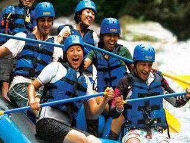
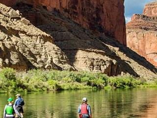

Trips
North Fork American Rafting Trips
The Class IV+ North Fork of the American River has the most difficult whitewater of the three forks of the American River. Giant boulders scattered throughout a steep, narrow canyon create a technical, challenging slalom. Previous rafting experience is advised.
 



Cherry Creek Rafting Trips
Cherry Creek is the most challenging commercial river rafting trip in California, and perhaps the entire United States. With a phenomenal 12 Class V rapids and many unnamed Class IV drops, this 9-mile run is incomparable.
Kaweah River Rafting Trips
Whitewater rafting trips on the Class IV+ Kaweah River located just outside of Sequoia National Park feature continuous thrilling rapids with a scenic alpine backdrop of snowcapped mountains. Previous rafting experience is highly recommended, as there is no time to learn to paddle!
Find your next adventure
Book your tripRafting Trips Comparison
| River | Difficulty Level | Trip Length | Highlights |
|---|---|---|---|
| South Fork American River | Class III | 1-Day | Ideal for beginners and families; offers exciting rapids and beautiful scenery. |
| Middle Fork American River | Class IV | 1-Day | Features thrilling rapids and the famous Tunnel Chute; suitable for adventurous rafters. |
| Tuolumne River | Class IV-V | 1-Day | Near Yosemite; offers challenging rapids and stunning wilderness; ideal for experienced rafters. |
| Cherry Creek (Upper Tuolumne) | Class V | 1-Day | Considered the most challenging commercially run whitewater in the U.S.; for expert rafters only. |
| Merced River | Class III-IV | 1-Day | Near Yosemite; provides a mix of moderate to challenging rapids; suitable for intermediate rafters. |